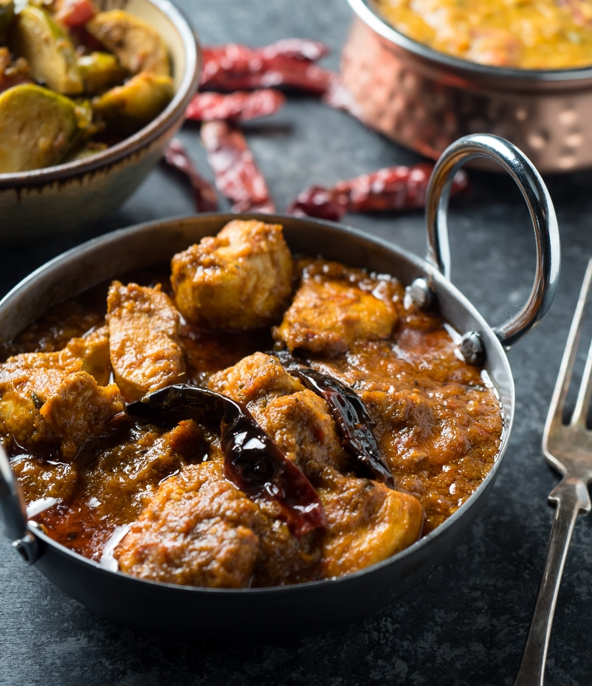

Chicken Vindaloo

Description
Chicken vindaloo is a spicy Indian curry dish that is known for its bold,
aromatic flavor and heat.
Ingredients
- one and a half lb chicken breast
- two tbsp cooking oil
- one onion
- four cloves of garlic
- one and a half tsp ginger paste
- vindaloo spice mix
- one fourth cup tomato paste
- six tbsp vineagar
- two cups water
- lil bit of cilantro
Steps
- In a large saucepan with a lid, heat 1 Tbsp oil over medium heat. Add cubed chicken and cook until you don't see any raw spots, 3-4 minutes. Remove from pot to a plate.
- Add 1 Tbsp more oil to the pot. Add the diced onion and cook, stirring, until quite soft and starting to brown lightly, about 4-5 minutes. (I like to add a splash of water to the pot about half way through cooking onions, which loosens any brown bits on the bottom of the pan and flavours the onions). Add the garlic and ginger to the pot and cook, stirring, another 30-45 seconds. Add the prepared spice mix to the pot and cook, stirring, for 45 seconds - 1 minute. Add the tomato paste to the pot and stir to combine. Add the vinegar and water or chicken stock to the pot and stir. Return the chicken to the pot. Bring to a boil, then reduce heat to medium low and cover the pot with a lid.
- Allow the curry to simmer covered for about 20 minutes, for the flavours to blend and the chicken to cook through. Remove the lid and simmer another further 10 minutes, stirring occasionally, to thicken the sauce.
- Serve garnished with chopped fresh cilantro.